How might we give people greater access to mobility?
Herd Network is a service that helps people maintain their mobility in times of crisis. It connects those in need to other members of their community who can provide help and resources.
Users in need simply send out a ‘flare’ from their mobile device, and those who can help, respond to these flares, enabling the natural instinct we have to help one another in time of crisis.
Herd Network was created in response to a competition put forward by the Ford Fund Smart Mobility Challenge to improve community mobility. Upon winning the challenge, we received funding to help realise our concept.
We were intrigued by repeated patterns of community enhanced mobility during a crisis. This was evident in a number of events such as the 15/16 UK floods, the Paris attacks, and even the Covid-19 Pandemic.
From the offset it felt appropriate to explore crises in response to a mobility brief. They can greately reduce access to basic products and services and in some cases even require evacuation. Moving forward we set out to deepen our understanding on the impacts a crisis can have on mobility.
Focusing on mobility in a crisis
We were intrigued by repeated patterns of community enhanced mobility during a crisis. This was evident in a number of events such as the 15/16 UK floods, the Paris attacks, and even the Covid-19 Pandemic.
From the offset it felt appropriate to explore crises in response to a mobility brief. They can greately reduce access to basic products and services and in some cases even require evacuation. Moving forward we set out to deepen our understanding on the impacts a crisis can have on mobility.
Things that move
- People
- Food
- Parcels
- Medical
- Assistance
Things that don't move
- Offices
- Shops
- Schools
- Hospitals
Times when mobility is crucial
- In a crisis
- Time critical deliveries
- In relation to employment
Flooding as a case study
5 million properties in the UK are at risk of flooding each year, with climate change models predicting that number to rise drastically by 2100.
Many “at risk” communities maintain a state of denial and choose to ignore the warnings. There is a need for greater awareness of the seriousness of flood risk.
The general experience of flooding is that people find themselves uncertain about what is happening. Less than 50% of 18-34 year olds know what to do in a flood.
Many people do not leave their homes when recommended to for fear of looting, or due to the restrictions of owning a pet. Often those who do stay regret their decision in hindsight.
Flooded roads, closed premisis, and loss of utilities cut people off from the products and services they need to live. Those who failed to prepare adequately can end up suffering as a result.
"Flooding is no longer approached as a preventable issue, but as something to be lived through"
How might we...
After exploring the mobility issues presented by a crisis we began to produce HMW’s with a focus on how we might change behaviour. Using affinity mapping we were able to group post-it notes together and summarise them into our core design problems.
During this process we also formed a list of considerations:
- Ensure communication is still possible in the event of power outages or loss of cellular networks
- Ensure the most vulnerable are prioritised (elderly, physical disabilities, mental disabilities, etc.)
- Ensure accessibility for all ages, nationalities, and demographics
Four key ideas
The Golden Moment
The period of time where self help is most crucial
- Use real time data to warn users
- Recommend actions in line with a flood timeline
- Present new options for mobility as the flood evolves
Sending a Flare
A rapid request for assistance
- Allow users to communicate their individual needs to the wider community
- Facilitate immediate response based upon priority
Resource Distribution
Improving the mobility of necessary items
- Maintain a database of local resources information
- Build a request based system
- Establish supply chains optimised for flooding conditions
Personalised Information
Motivating people through data that matters to them
- Relay information in a way that focusses on personal impact
- Remove inaction due to not knowing what to do
Local County Councils & Resilience Networks
Our ideas were well recieved by our local resilience network (LLR Prepared) who assured us our goals were in line with government targets. There is even funding available for communities to improve their resilience to flooding, “The problem is that most of them don’t know what to spend it on.”
“I had to hold on to a couple of teenage boys to avoid being swept away by the great force of the water”
Past experiences (Interviews & Secondary Research)
A common theme throughout our research into flooding and conversations with victims was that communities always jumped at the chance to rally together and help each other.
Existing Market Solutions
A common theme throughout our research into flooding and conversations with victims was that communities always jumped at the chance to rally together and help each other.
Intuition over fluency
This service is likely to be used most often by people new to it or who haven’t used it in a while, so the design should cater to beginners rather than power users.
Ways to implement:
- Actions are discoverable
- Fewer interactions
- Transferable mental models
- Scalable metaphors
Momentum, not thought
Inaction is the primary enemy here, so the interface must make action as simple and easy as possible.
Ways to implement:
- Always suggest
- Flare everywhere
- Don’t overwhelm
- Remove action friction
- Build habits
Social over personal
Primarily being a social service, the user must be encouraged to act in a social way.
Ways to implement:
- Reinforce social choices
- Encourage sharing
- Maintain internal social rewards (Such as feeling pride by publicly volunteering).
Avoidable risk to mobility is predicted. Product guides user actions.
This journey tackles common barriers to mobility in a crisis, namely that of confusion and lack of awareness of risk. The personalised warning ensures users respond, and the ensuing actions keep them able to prepare for the flood calmly.
User lacks a resource, product helps communicate need to wider community
This journey pieces together how a user could alert the community to their need, and how the product can maintain their mental state as they wait. In the instance of the flare receiving no response, further options are explored.
User wants to help, product enables this.
In this journey those who want to help are encouraged to identify the ways in which they may be able to and add them into a database. From this point the product uses an algorithm to match those who want to help with those in need.
Outlining the service offering
The Home Screen
This page focuses on giving users the tools to best help themselves in a crisis. Whether its recieving warnings, tasks to minimise their risk, sending & managing flares, or getting help from initiatives.
Monitoring flares
A space for users to ‘Give Help’ by monitoring & acting on flares sent in their community.
Sending a Flare
The "trigger" to sending out a flare when in need.
The Flare Card
A preview of the sent flare for users to read and act on.
Initiative
A way for people to proactively volunteer their help.
Community Stories
Featured articles written by community leaders
Broadcast
Global / Local push notifications by Herd & Community Leaders
Automated Indexing
Keyword analysis of flares and initiatives for better search.
Warnings
Personalised warnings based on pre-identified risks
Tasks
Recommendations to ensure users maintain their mobility.
Audio interface
Send flares with a phone call - for those unable to use the app